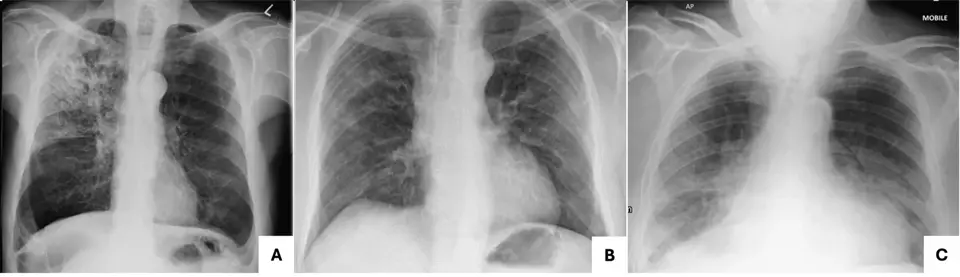

DX.4 — Infections (catégorie CIM-10 la plus représentée parmi les diagnostics de sortie)
1. Définition et sémantique
Où se situe le problème ? Du général au particulierCertaines maladies infectieuses et parasitairesCIM-10, chapitre I
Infections bactériennes, virales et fongiquesCette branche mène à la catégorie étudiée.
Maladies intestinales infectieusesElles regroupent les diarrhées et gastro-entérites d'origine infectieuse, classées au début du chapitre I de la CIM-10.
TuberculoseElle regroupe les infections par les mycobactéries du complexe tuberculeux, de siège pulmonaire ou extrapulmonaire.
Infections virales et mycosesElles regroupent les infections dues à des virus et à des champignons, classées dans la suite du chapitre I.
Maladies parasitairesElles regroupent les infections causées par des protozoaires et des helminthes.
Infections bactériennes, virales et fongiquesCIM-10
Infection comme catégorie de diagnostic de sortieCette catégorie est la notion étudiée dans ce cours.
Maladie cardiovasculaire comme catégorie de diagnostic de sortieElle regroupe les diagnostics de sortie liés au cœur et aux vaisseaux, comme l'insuffisance cardiaque.
Maladie respiratoire non infectieuse comme catégorie de diagnostic de sortieElle regroupe les diagnostics de sortie liés aux bronches et aux poumons sans infection, comme la décompensation d'une BPCO.
Maladie métabolique comme catégorie de diagnostic de sortieElle regroupe les diagnostics de sortie liés aux troubles du sodium, du glucose ou de l'hydratation.
Infection comme catégorie de diagnostic de sortieCIM-10
Infections d'organeElles touchent la voie urinaire, l'appareil respiratoire, la peau ou le tube digestif (CIM-10).
Infection généraliséeElle correspond au sepsis (CIM-11).
Une infectionElle est la multiplication d'un micro-organisme dans un tissu, avec réponse inflammatoire de l'hôte. Elle s'exprime par fièvre, douleur d'organe et élévation des marqueurs inflammatoires. est la cause la plus représentée des diagnostics de sortie après une plainte non spécifique aux urgences2. Cette catégorie rassemble des foyers très différents. Chez le sujet âgé, le foyerIl est l'organe d'où part l'infection : poumon, voie urinaire, peau, abdomen, cœur. Le trouver conditionne l'antibiotique, car chaque foyer a ses germes. se cache derrière une asthénie, une chute ou une confusion. Le sepsisDysfonction d'organe menaçant la vie, causée par une réponse inadaptée de l'hôte à une infection (Sepsis-3, 2016)5. en est la forme grave.
2. Épidémiologie (Suisse, puis Europe)
Les infections sont la première catégorie CIM-10 de sortie après plainte non spécifique2, dont en Suisse l'infection urinaire (49/572, 9 %) et la pneumonie (37/572, 6 %)1. Elles visent le sujet âgé, diabétique, cancéreux, cirrhotique, immunodéprimé ou en institution, car son immunité est affaiblie. Le retard diagnostique diffère l'antibiotique du patient septique. L'abus d'antibiotiques provoque des résistances, d'où le vaccin et l'hygiène (point 12).
Indicateur
Fréquence observée (n/N, %)
Population, source
Part des infections dans les diagnostics de sortie
Rang 1 : les infections forment la catégorie de diagnostic de sortie la plus fréquente2
Revue systématique de 9 études, adultes aux urgences, plusieurs pays, 20202
Amorce moléculaire : des récepteurs de l'immunité innée reconnaissent des motifs du germe. Ils activent la production de cytokines.
Développement cellulaire : neutrophilesGlobules blancs recrutés en premier sur le foyer. Ils phagocytent le germe et libèrent des enzymes qui lèsent aussi le tissu sain. et macrophages envahissent le foyer. Le pus se forme.
Installation tissulaire : l'inflammation locale provoque rougeur, chaleur, douleur et dysfonction de l'organe.
Passage systémique : les cytokines passent dans le sang. Elles élèvent le seuil thermique hypothalamique : fièvre, frissons, tachycardie.
Maintien et gravité : une vasodilatation et une fuite capillaire font chuter la pression. La perfusion des organes baisse : sepsis, puis choc.
Chez le sujet âgé : la réponse est atténuée, donc la fièvre manque et les signes sont non spécifiques2.
Lésion ou perturbation
Exploration qui la montre
Thérapeutique et mécanisme
Germe dans un tissu
Culture, PCR, imagerie du foyer
Antibiotique actif sur le germe présumé
Abcès, collection
Échographie, scanner
Drainage : l'antibiotique pénètre mal le pus
Bactériémie
Hémocultures
Antibiotique i.v., puis adaptation à l'antibiogramme
Vasodilatation, hypoperfusion
Pression, lactate, diurèse
Remplissage vasculaire, puis vasopresseurs
Inflammation systémique
CRP, procalcitonine, leucocytes
Contrôle du foyer ; antipyrétique pour le confort
4. Démarche diagnostique
On cherche d'abord le sepsis. On cherche ensuite le foyer, organe par organe. On traite alors selon le foyer.
4.1 Drapeaux rouges
Drapeau rouge 🚩
Diagnostic évoqué
Conduite immédiate
Pression systolique ≤ 100 mmHg, fréquence respiratoire ≥ 22/min, confusionPourquoi rouge : ce sont les 3 critères du qSOFA5. Deux critères ou plus signalent un risque accru de mauvaise évolution (Sepsis-3, 2016)5.
Sepsis
Hémocultures, lactate, antibiotique dans l'heure.
Lactate élevé, marbrures, oliguriePourquoi rouge : ils montrent l'hypoperfusion tissulaire. Le choc septique (vasopresseur requis pour une PAM ≥ 65 mmHg et lactate > 2 mmol/L) a une mortalité hospitalière > 40 %5.
Choc septique
Remplissage, vasopresseurs, soins intensifs.
Raideur de nuque, céphalées, photophobiePourquoi rouge : la méningite bactérienne évolue en heures et laisse des séquelles neurologiques.
Méningite bactérienne
Hémocultures, antibiotique, ponction lombaire selon les règles.
Douleur disproportionnée, crépitation, bulles, peau violacéePourquoi rouge : une infection nécrosante progresse sous la peau en heures et impose une chirurgie.
Fasciite nécrosante
Avis chirurgical immédiat, antibiotique à large spectre.
Fièvre avec souffle nouveau ou emboliesPourquoi rouge : une endocardite détruit les valves et envoie des emboles septiques dans le cerveau, le rein et la rate.
Endocardite infectieuse
Trois paires d'hémocultures, échocardiographie.
Fièvre sous chimiothérapie ou avec neutropéniePourquoi rouge : sans neutrophiles, l'infection devient rapidement mortelle.
Neutropénie fébrile
Antibiotique à large spectre dans l'heure.
4.2 Étapes jusqu'au diagnostic, sans urgence ni drapeau rouge
Le médecin mesure la température, la pression, la fréquence respiratoire, la saturation et l'état mental.
Il recherche le foyer par l'anamnèse et l'examen de chaque système (point 6).
Il prescrit le bilan de base : hémogramme, CRP, créatinine, bandelette urinaire, radiographie du thorax.
Il prélève les cultures avant l'antibiotique si l'état l'exige.
Il explore l'organe suspect par échographie ou scanner si le foyer reste inconnu.
4.3 Diagnostics différentiels discriminants
Diagnostic
Signe ou examen qui tranche
Piège classique
Conduite si positif
Infection urinaire
Bandelette et culture d'urine
Bactériurie asymptomatique du sujet âgé prise pour une infection.
Traiter seulement si symptômes.
Pneumonie
Radiographie du thorax
Radiographie normale au début.
Antibiotique selon le CRB-65 (voir DX.3).
Infection cutanée
Examen de toute la peau
Foyer sous le pli ou le sacrum non vu.
Antibiotique, drainage.
Infection abdominale
Échographie ou scanner abdominal
Abdomen souple chez le sujet âgé.
Antibiotique, avis chirurgical.
Cause non infectieuse (médicament, cancer, embolie)
Cultures négatives, imagerie, revue des médicaments
Fièvre attribuée à une infection sans foyer.
Traiter la cause réelle.
5. Anamnèse ciblée et drapeaux rouges
Question clé
Raison physiopathologique
Fièvre, frissons, sueurs ?Les cytokines relèvent la consigne thermique. Des frissons francs suggèrent une bactériémie.
Ils signent une réponse systémique.
Toux, dysurie, douleur abdominale, plaie cutanée ?Chaque symptôme d'organe oriente vers le foyer. Chez le sujet âgé, ils peuvent manquer.
Ils localisent le foyer.
Chute, confusion, perte d'appétit ?Ces signes remplacent les symptômes d'organe chez le sujet âgé2.
La réponse à l'infection est atténuée.
Sonde urinaire, cathéter, prothèse ?Le matériel étranger porte un biofilm. Il entretient l'infection et la rend résistante.
Le matériel est un foyer.
Voyage, contact malade, animaux ?L'exposition oriente vers une infection tropicale, la grippe ou une zoonose.
Ils affaiblissent les défenses et masquent les signes.
Antibiotiques récents, allergies, vaccinations ?
Ils changent la flore et le choix de la molécule.
Drapeaux rouges actionnables. Confusion, pression basse ou fréquence respiratoire élevée : prélever les hémocultures et donner l'antibiotique dans l'heure. Raideur de nuque : suspecter une méningite. Douleur disproportionnée de la peau : appeler le chirurgien. Souffle nouveau : demander une échocardiographie et l'avis du cardiologue. Foyer inconnu : imagerie par scanner et avis spécialisé d'infectiologie. Tout drapeau rouge impose l'urgence.
6. Examen physique ciblé, région par région
Le normal précède le pathologique. Déshabiller entièrement le patient pour trouver le foyer.
Région
Normal attendu
Signes à rechercher (cliquables)
1. Général
Patient éveillé, sans fièvre, pression systolique au-dessus du seuil qSOFA de 100 mmHg5.
Fièvre, hypothermie, confusion, tachypnéeTechnique : mesurer la température centrale ou tympanique ; compter la fréquence respiratoire 60 secondes. Valeur : la fréquence ≥ 22/min et la confusion entrent dans le qSOFA5. Piège : l'hypothermie du sujet âgé est de mauvais pronostic.
2. Peau et plis
Peau intacte, sans rougeur.
Érythème, plaie, escarre, point de ponctionTechnique : inspecter le dos, le sacrum, les talons, les plis et les sites de cathéter. Valeur : un foyer cutané se voit. Piège : l'escarre sacrée est souvent oubliée.
3. Cavité buccale et ORL
Muqueuses humides, gorge calme, tympans normaux.
Pharynx rouge, dents abcédées, tympan bombéTechnique : abaisser la langue avec un abaisse-langue, éclairer, examiner les tympans à l'otoscope. Valeur : un foyer ORL ou dentaire explique la fièvre. Piège : un foyer dentaire passe inaperçu sans examen.
4. Nuque et méninges
Flexion de la nuque libre.
Raideur de nuqueTechnique : patient couché, fléchir lentement la tête vers le sternum. Valeur : la résistance évoque la méningite ; sensibilité faible. Piège : souvent absente chez le sujet âgé ; son absence n'exclut rien.
5. Thorax
Murmure vésiculaire symétrique.
Crépitants, souffle tubaireTechnique : ausculter dos et poumons des deux côtés. Valeur : ils orientent vers la pneumonie. Piège : un examen normal ne l'exclut pas.
6. Cœur
Bruits réguliers, sans souffle.
Souffle nouveau, signes d'embolieTechnique : ausculter les foyers aortique et mitral ; chercher pétéchies sous-unguéales et conjonctivales. Valeur : évoque l'endocardite. Piège : absents dans l'endocardite débutante.
Défense, douleur de la fosse lombaireTechnique : palper doucement les quatre quadrants ; percuter les fosses lombaires avec le poing. Valeur : évoque cholécystite, appendicite ou pyélonéphrite. Piège : abdomen peu douloureux chez le sujet âgé.
8. Appareil locomoteur
Articulations indolores, mobiles.
Articulation chaude et gonfléeTechnique : palper et mobiliser chaque grande articulation. Valeur : évoque l'arthrite septique, qui exige une ponction. Piège : prothèse articulaire infectée.
7. Approche syndromique
7.1 Syndrome septique
Signes fonctionnels
Signes physiques, geste et mécanisme
Frissons, asthénieLes cytokines élèvent la consigne thermique, le corps frissonne pour se réchauffer.
Tachycardie, hypotensionGeste : pouls et tensiomètre. Pathologique : une systolique d'au plus 100 mmHg compte au qSOFA5. Mécanisme : vasodilatation et fuite capillaire. ; marbruresGeste : inspecter les genoux et appuyer sur l'ongle (temps de recoloration allongé). Mécanisme : hypoperfusion cutanée.
7.2 Syndrome méningé
Signes fonctionnels
Signes physiques, geste et mécanisme
Céphalées, photophobie, vomissements.
Raideur de nuqueGeste : flexion passive de la tête, patient couché. Normal : le menton touche le sternum. Mécanisme : l'irritation des méninges contracte les muscles de la nuque.
7.3 Syndrome infectieux d'organe
Signes fonctionnels
Signes physiques, geste et mécanisme
Toux, dysurie, douleur abdominale ou cutanée.
Douleur provoquéeGeste : palpation ou percussion de la zone suspecte. Normal : indolore. Mécanisme : l'inflammation sensibilise les nocicepteurs. ; foyer localisé
7.4 Tableau atypique du sujet âgé
Signes fonctionnels
Signes physiques, geste et mécanisme
Chute, anorexie, confusionL'hypoperfusion cérébrale et la réponse atténuée expliquent ce tableau2.
Tachypnée isoléeGeste : compter la fréquence respiratoire pendant 1 minute2. Pathologique : une fréquence d'au moins 22/min compte au qSOFA5. Mécanisme : signe précoce de sepsis, parfois seul.
8. Diagnostic positif et critères
Critères Sepsis-3 (2016) : le sepsis associe une infection suspectée ou prouvée à une hausse du score SOFA d'au moins 2 points5. Ce qui ne suffit pas : la fièvre seule, la CRP seule et un foyer sans retentissement d'organe ne définissent pas le sepsis.
Le qSOFA alerte, il ne diagnostique pas. Deux points ou plus imposent de chercher une dysfonction d'organe5.
9. Examens complémentaires
9.a Gold standard
Il n'existe pas de gold standard unique pour la catégorie. Pour chaque foyer, la culture du site stérile reste la référence : hémocultures, urines, liquide articulaire ou ponction.
9.b Première intention
Examen et prescription
Résultat
Signification
Conduite
Hémogramme et CRPÀ prescrire chez tout patient suspect. La CRP s'élève dans l'infection bactérienne. Les leucocytes peuvent être bas dans le sepsis grave.
CRP élevée, leucocytes anormaux
Inflammation, cause non précisée
Chercher le foyer
Bandelette et culture d'urineJet moyen, avant l'antibiotique. Nitrites et leucocytes positifs évoquent l'infection. Piège : chez le sujet âgé, la bandelette positive isolée ne suffit pas.
Positive avec symptômes
Infection urinaire
Antibiotique
Radiographie thorax
Infiltrat
Pneumonie
Antibiotique
LactateMarqueur d'hypoperfusion. Prélever sur sang artériel ou veineux sans garrot prolongé. Une valeur élevée impose un remplissage.
Élevé
Hypoperfusion, sepsis grave
Remplissage, soins intensifs
Cliché de référence
Radiographie du thorax de face : trois aspects de pneumonie. Radiographie thoracique de face de trois patients : A pneumonie lobaire, B bronchopneumonie, C pneumonie interstitielle

Lisez d'abord seul ce cliché (radiographie du thorax de face : trois aspects de pneumonie) : cherchez vous-même le signe.
La copie annotée (radiographie du thorax de face : trois aspects de pneumonie) montre les repères décrits ci-dessous.
Lecture guidée.
Premier repère : A : le champ pulmonaire droit présente des opacités alvéolaires, ce qui signe un foyer pulmonaire.
Deuxième repère : B : des opacités mal limitées autour du hile droit signent une bronchopneumonie.
Troisième repère : C : des opacités diffuses et floues des deux bases signent une atteinte interstitielle, sur un cliché au lit.
Pièges.
Une radiographie normale au début de la maladie ne peut pas exclure la pneumonie.
Un cliché au lit en incidence antéro-postérieure se lit moins bien qu'un cliché debout.
Ce que l'image décide. Un infiltrat avec fièvre et symptômes respiratoires oriente vers la pneumonie, et le médecin choisit l'antibiotique selon la gravité.
HémoculturesDeux à trois paires avant l'antibiotique, sur des sites différents. Positives : bactériémie ; une seule paire positive avec un germe cutané évoque une contamination.
Sepsis (dès la 1re heure, sans attendre), fièvre avec frissons, suspicion d'endocardite
Adapter l'antibiotique à l'antibiogramme
ProcalcitonineMarqueur d'infection bactérienne. Une valeur basse soutient l'arrêt de l'antibiotique. Sa valeur isolée ne remplace pas l'examen clinique.
Doute sur l'origine bactérienne
Arrêt précoce possible
Scanner thoraco-abdominalÀ demander si le foyer reste inconnu. Il montre abcès, cholécystite, diverticulite, pneumonie. Le médecin évite le contraste iodé en insuffisance rénale sévère.
Foyer inconnu
Drainage ou chirurgie
ÉchocardiographieTransthoracique d'abord, puis transœsophagienne si doute. Cherche une végétation valvulaire.
Hémocultures positives, souffle nouveau
Traitement de l'endocardite
Ponction lombaire
Suspicion de méningite, après imagerie si signe focal
Antibiotique sans attendre si retard
10. Arbre décisionnel
Si la pression est basse, si le lactate est élevé ou si le patient est confus, le médecin traite un sepsis : hémocultures, antibiotique dans l'heure, remplissage.
Sinon, si la nuque est raide, le médecin suspecte une méningite : il donne l'antibiotique et pratique la ponction lombaire.
Sinon, si la douleur cutanée est disproportionnée, le médecin appelle le chirurgien.
Sinon, il recherche le foyer par l'examen complet et le bilan de base.
Si le foyer est urinaire avec des symptômes, il traite l'infection urinaire.
Si la radiographie montre un infiltrat, il traite la pneumonie (DX.3)5.
Si aucun foyer n'apparaît après le bilan, il demande un scanner, puis recherche une cause non infectieuse.
11. Prise en charge selon les recommandations suisses
Les doses viennent de l'AIPS suisse. Les directives suisses de la société d'infectiologie (SSI) donnent le choix de l'antibiotique par foyer. Le principe de l'antibiotique dans l'heure suit la campagne internationale sur le sepsis.
11.A But thérapeutique
Le but est de contrôler le foyer, de rétablir la perfusion et de guérir l'infection. Les cibles sont une pression moyenne de 65 mmHg et une diurèse conservée5. L'antibiotique est adapté puis arrêté dès que possible.
11.B Moyens
Urgence (sepsis ou choc), dans cet ordre.
Le médecin pose deux voies veineuses et surveille les constantes.
Il prélève deux paires d'hémocultures et le lactate.
Le médecin administre l'antibiotique dans l'heure. Il choisit Rocephin®La ceftriaxone (ATC J01DD04) est une céphalosporine de 3e génération6. Les chefs de file du groupe des céphalosporines sont le céfuroxime, la ceftriaxone et le céfépime. Elle est indiquée dans la septicémie, la pneumonie, les infections urinaires, abdominales, cutanées et osseuses, et la méningite6. Selon l'AIPS, l'adulte reçoit 1 à 2 g une fois par 24 heures6. La dose quotidienne unique peut atteindre 4 g en cas d'infection sévère ou de germe moyennement sensible6. Le dialysé ne reçoit pas plus de 2 g par jour6. Elle est contre-indiquée en cas d'hypersensibilité aux céphalosporines6. Elle est aussi contre-indiquée chez le nouveau-né de 28 jours ou moins qui reçoit du calcium par voie intraveineuse6. Elle expose à la diarrhée à Clostridium difficile6.. Pour une infection grave à germes multiples, il choisit Piperacillin/Tazobactam FreseniusL'association pipéracilline-tazobactam (ATC J01CR05) est une pénicilline avec un inhibiteur de bêta-lactamase7. Les chefs de file du groupe des associations de pénicillines sont l'amoxicilline-clavulanate et la pipéracilline-tazobactam. Elle est indiquée dans les infections respiratoires, rénales, intra-abdominales et cutanées, chez le patient neutropénique et dans l'état septique7. Selon l'AIPS, l'adulte et l'adolescent dès 12 ans reçoivent 2 g/0,25 g à 4 g/0,5 g trois fois par jour7. Cette dose correspond à 100 à 200 mg de pipéracilline par kg et par jour7. L'hémodialysé reçoit au plus 8 g de pipéracilline et 1 g de tazobactam par jour7. Elle est contre-indiquée en cas d'allergie connue aux bêtalactames ou aux inhibiteurs de bêtalactamases7. Sa néphrotoxicité potentielle impose la prudence en cas d'insuffisance rénale7..
Il remplit avec des cristalloïdes, puis introduit un vasopresseur si l'hypotension persiste malgré le remplissage.
Il contrôle le foyer par drainage, retrait du cathéter ou chirurgie.
Il demande l'avis de médecine intensive si le choc persiste.
Hors urgence, le médecin suit cet ordre.
Mesures générales. Le médecin hydrate le patient et traite la fièvre et la douleur. Il prescrit Dafalgan®Le paracétamol (ATC N02BE01) est un antalgique et antipyrétique non opioïde8. Il est indiqué dans la douleur et la fièvre8. Selon l'AIPS, l'adulte et le patient de plus de 12 ans reçoivent 500 à 1000 mg par prise8. Le maximum est de 4000 mg par jour, avec un intervalle de 4 à 8 heures8. La dose journalière ne dépasse pas 2 g en cas de maladie hépatique chronique, d'alcoolisme chronique, de dénutrition chronique ou de déshydratation8. L'AIPS mentionne la septicémie parmi les situations à faibles réserves de glutathion hépatique8. Le paracétamol est contre-indiqué en cas d'insuffisance hépatique sévère8.. Ce paracétamol suffit en première intention.
Infection urinaire haute. Le médecin choisit Tavanic®La lévofloxacine (ATC J01MA12) est une fluoroquinolone9. Les chefs de file du groupe sont la ciprofloxacine, la lévofloxacine et la moxifloxacine. Elle est indiquée chez l'adulte dans la pyélonéphrite et les infections urinaires compliquées, lorsque les antibiotiques recommandés en première intention sont jugés inappropriés9. Selon l'AIPS, la pyélonéphrite se traite par 500 mg une fois par 24 heures, par voie orale ou intraveineuse, pendant 7 à 10 jours9. Si la clairance de la créatinine est de 50 à 20 mL/min, la dose d'entretien passe à 250 mg par 24 heures après une dose initiale de 500 mg9. Elle est contre-indiquée avant 18 ans, pendant la grossesse et l'allaitement, en cas d'épilepsie et après un problème tendineux sous fluoroquinolone9. Elle peut provoquer une nécrose hépatique mortelle, surtout chez le patient atteint d'une maladie sévère comme la septicémie9.. Il peut aussi choisir Rocephin® selon l'antibiogramme. Les fluoroquinolones exposent à des effets indésirables invalidants et parfois durables, qui touchent les tendons, les nerfs et le psychisme9. La restriction européenne de l'EMA les écarte des infections bénignes, comme la cystite non compliquée, mais elle maintient la pyélonéphrite parmi leurs indications. Le médecin doit donc réserver la lévofloxacine à la pyélonéphrite9. Il la prescrit avec prudence chez le sujet âgé, chez l'insuffisant rénal et sous corticoïdes, car le risque de rupture tendineuse y augmente9.
Infection cutanée, respiratoire ou ORL. Le médecin choisit Augmentin®L'amoxicilline-acide clavulanique (ATC J01CR02) est une pénicilline avec un inhibiteur de bêta-lactamase10. Il est indiqué dans la sinusite, la pneumonie ambulatoire, la pyélonéphrite et les infections de la peau10. Selon l'AIPS, l'adulte et l'enfant de plus de 40 kg reçoivent 3 x 625 mg par jour10. Dans les cas particuliers, la dose est de 2 x 1 g ou de 3 x 625 mg, avec un maximum de 3 x 1 g par jour10. Si la clairance de la créatinine est de 10 à 30 mL/min, la dose est de 625 mg toutes les 12 heures10. Sous 30 mL/min, la dose de 2 x 1 g est interdite10. Il est contre-indiqué en cas d'hypersensibilité aux pénicillines ou aux céphalosporines, et après un ictère ou une atteinte hépatique sous Augmentin10..
Grippe confirmée. Il prescrit Tamiflu®L'oseltamivir (ATC J05AH02) est un inhibiteur de la neuraminidase11. Il est indiqué dans le traitement et la prophylaxie de la grippe A et B11. Selon l'AIPS, l'adulte et l'adolescent dès 13 ans reçoivent 75 mg deux fois par jour pendant 5 jours11. Le traitement débute le jour des symptômes ou le lendemain, dans l'idéal au cours des 36 premières heures11. Il est contre-indiqué en cas d'hypersensibilité connue11. Des troubles neuropsychiatriques ont été observés, surtout chez l'enfant et l'adolescent11. Le sujet âgé ne nécessite aucune adaptation de la posologie11..
Non pharmacologique. Le médecin draine l'abcès, retire la sonde ou le cathéter, mobilise le patient et assure la nutrition et l'hydratation.
Désescalade. Le médecin adapte l'antibiotique à l'antibiogramme, puis passe à la voie orale dès l'amélioration. Pour la lévofloxacine, ce passage se fait en général après 2 à 4 jours de traitement, avec la même dose, car les comprimés et la solution pour perfusion sont bioéquivalents9.
Limites du spectre selon l'AIPS
Les staphylocoques résistants à la méticilline résistent aux céphalosporines, dont la ceftriaxone6.
Les entérocoques et Listeria monocytogenes sont en général résistants à la ceftriaxone, et Pseudomonas aeruginosa l'est à peu d'exceptions près6.
La ceftriaxone ne traite pas la colite à Clostridium difficile, car ce germe lui résiste6.
La pipéracilline agit in vitro contre de nombreuses bactéries anaérobies et aérobies, gram-positives et gram-négatives7.
L'AIPS déconseille la lévofloxacine dans les infections à staphylocoque résistant à la méticilline, sauf si la sensibilité du germe est confirmée9.
La résistance d'Escherichia coli aux fluoroquinolones varie en Suisse, et le prescripteur tient compte de la prévalence locale9.
Médicaments de l'AIPS suisse
Molécule (spécialité)
Dose AIPS, adulte
Voie
Rythme et durée
Contre-indication majeure
N° Swissmedic
Ceftriaxone (Rocephin®)
1 à 2 g par jour, jusqu'à 4 g si infection sévère6
Intraveineuse en perfusion d'au moins 30 minutes, ou intramusculaire6
Hypersensibilité aux céphalosporines ; prématuré jusqu'à 41 semaines d'âge post-menstruel ; nouveau-né ictérique ou sous calcium intraveineux ; voie i.m. : contre-indications de la lidocaïne6
Le calcium intraveineux provoque des précipités chez le nouveau-né ; les aminosides s'administrent séparément6.
Réaction d'hypersensibilité grave, diarrhée à Clostridium difficile, précipités biliaires6
Arrêter immédiatement le traitement en cas d'hypersensibilité grave et prendre les mesures d'urgence6
Pipéracilline-tazobactam
L'association avec la vancomycine augmente l'incidence de l'insuffisance rénale aiguë7.
Réaction cutanée sévère, syndrome DRESS, lymphohistiocytose hémophagocytaire après plus de 10 jours7
Interrompre immédiatement le traitement ; en cas de colite pseudomembraneuse, arrêter et traiter, sans antipéristaltique7
Paracétamol
Le phénobarbital, la carbamazépine, l'isoniazide et la rifampicine aggravent l'hépatotoxicité8.
Agranulocytose et anémie hémolytique, surtout en cas de carence en G-6-PD8
Éviter la prise excessive ou chronique sous phénytoïne et surveiller les signes d'hépatotoxicité8
Lévofloxacine
Les sels de fer, les antiacides au magnésium ou à l'aluminium et le sucralfate réduisent la résorption : prise 2 heures avant ou après. Les antagonistes de la vitamine K exigent un contrôle de l'INR9.
Tendinite, rupture tendineuse, allongement de l'intervalle QT, neuropathie périphérique, myoclonies9
Interrompre immédiatement dès les premiers signes d'un effet indésirable grave9
Amoxicilline-acide clavulanique
Le probénécide est déconseillé ; l'efficacité des contraceptifs oraux diminue ; l'allopurinol augmente le risque d'exanthème10.
Anaphylaxie, réaction cutanée sévère, syndrome de Kounis10
Injecter immédiatement de l'adrénaline en cas d'anaphylaxie, puis des glucocorticoïdes10
Oseltamivir
Les interactions cliniquement significatives sont improbables11.
Troubles neuropsychiatriques, surtout chez l'enfant et l'adolescent11
La perfusion dure au moins 30 minutes. Les 2 g se diluent dans 40 mL de soluté sans calcium, et la solution ne se mélange pas à un autre antibiotique6.
Tavanic®
La perfusion dure au moins 30 minutes pour 250 mg et au moins 60 minutes pour 500 mg9.
Augmentin®
Le patient prend le comprimé au début du repas, avec au moins un demi-verre d'eau, pour optimiser la résorption et la tolérance digestive10.
Dafalgan®
Le comprimé effervescent à 1 g est réservé au patient de plus de 50 kg, car le surdosage endommage le foie8.
Tamiflu®
Le traitement débute le jour des symptômes ou le lendemain, dans l'idéal au cours des 36 premières heures11.
Situations spéciales
Situation
Conduite selon l'AIPS
Grossesse et allaitement
Rocephin® : seulement si formellement indiqué, surtout au 1er trimestre ; elle ne s'utilise pas pendant l'allaitement6. Augmentin® : seulement en cas de nécessité absolue10. Tavanic® : la grossesse et l'allaitement figurent parmi ses contre-indications9. Pipéracilline-tazobactam : pas d'emploi pendant la grossesse sauf nécessité absolue, et pas d'allaitement pendant le traitement7. Paracétamol : possible en cas de nécessité clinique pendant la grossesse8. Oseltamivir : bénéfice incertain chez la femme enceinte, allaitement envisageable si le bénéfice est indiscutable11.
Insuffisance rénale
Augmentin® : 625 mg toutes les 12 h si la clairance de la créatinine est de 10 à 30 mL/min10. Tavanic® : 250 mg par 24 h si elle est de 50 à 20 mL/min, après une dose initiale de 500 mg9. Dafalgan® : intervalle de 6 h et maximum de 3000 mg par jour si elle est de 10 à 50 mL/min8. Pipéracilline-tazobactam : dose réglée sur le débit de filtration glomérulaire, avec prudence à cause de sa néphrotoxicité7. Rocephin® : au plus 2 g par jour chez le dialysé6.
Allergie aux bêtalactames
La pipéracilline-tazobactam est contre-indiquée en cas d'allergie connue aux bêtalactames7. Augmentin® est contre-indiqué en cas d'hypersensibilité aux pénicillines ou aux céphalosporines10. La ceftriaxone est contre-indiquée en cas d'hypersensibilité aux céphalosporines, et le risque augmente chez le patient allergique à la pénicilline6.
Sujet âgé
Le seuil d'hospitalisation est bas, et le médecin cherche la cause de la chute. Ni Augmentin®, ni l'oseltamivir, ni la ceftriaxone ne demandent d'adaptation liée à l'âge10116. Tavanic® expose à la tendinite après 60 ans et sous corticostéroïdes9.
Enfant
La dose se règle sur le poids. Tavanic® est contre-indiqué avant 18 ans9. Rocephin® : 20 à 80 mg/kg par jour de 15 jours à 12 ans, et la dose de l'adulte dès 50 kg6. L'oseltamivir s'emploie dès 1 an11. Les comprimés d'Augmentin® ne conviennent pas à l'enfant de moins de 40 kg10.
Insuffisance hépatique
Le paracétamol ne dépasse pas 2 g par jour en cas de maladie hépatique chronique8. Augmentin® est contre-indiqué après un ictère ou une atteinte hépatique sous ce médicament10. La ceftriaxone et la lévofloxacine ne demandent aucun ajustement hépatique69.
Le médecin informe le patient des effets indésirables : diarrhée sous antibiotique, tendinopathie sous Tavanic®, réaction allergique cutanée.
Social et professionnel
Un arrêt de travail se justifie selon le foyer. Les soins sont couverts par la LAMal. La LAA s'applique en cas d'accident ou d'infection professionnelle. La conduite est déconseillée pendant la fièvre ou la confusion.
11.C Surveillance
Quoi
Quand
Seuil d'alerte
Constantes, état mental
Toutes les 1 à 4 heures en phase aiguë
Pression systolique < 90 mmHg ; confusion nouvelle
Le médecin autorise la sortie lorsque quatre critères sont réunis, car chacun garantit la poursuite sûre du traitement à domicile :
Le patient est apyrétique.
Il est stable sur le plan hémodynamique.
Il prend l'antibiotique par voie orale.
Il mange et boit seul.
Le pronostic dépend du foyer, de l'âge et de la rapidité du traitement.
12. Prévention
Niveau
Gestes
Primaire
Vaccination antigrippale, antipneumococcique et selon l'âge, d'après le plan de vaccination suisse (OFSP/CFV). Hygiène des mains. Retrait rapide des sondes.
Secondaire
Chercher l'infection devant toute plainte non spécifique du sujet âgé2 ; antibiotique rapide en cas de sepsis.
La question-réflexe devant tout symptôme général est : « sur quel rythme (TEMPO) se joue le IN ? » Elle conduit à passer les sept lettres.
Particulier : quinze diagnostics différentiels suivent l'ordre de la liste canonique, avec des identifiants DX stables et sans valeur de fréquence, regroupés ci-dessous2.
② Les 16 SSP de la catégorie G (mnémotechnique dans l'ordre G1 → G16)
Dans la leçon DX.4 (infections), la phrase mnémotechnique est : Tom Trouve Sa Fatigue Sans Fièvre : Bouffée, Hypothermie, Prurit, Douleurs, Troubles, Œdème, Décès, Décès, Poids, Poids.
Mot
SSP
Nom
Tom
G1
Transpiration anormale
Trouve
G2
Tuméfaction, tumeur, adénopathie
Sa
G3
Soif excessive
Fatigue
G4
Fatigue, lassitude
Sans
G5
Sensation de maladie
Fièvre
G6
Fièvre, frissons, hyperthermie
Bouffée
G7
Bouffées vasomotrices (flush)
Hypothermie
G8
Hypothermie
Prurit
G9
Prurit
Douleurs
G10
Douleurs de tous types
Troubles
G11
Troubles du sommeil
Œdème
G12
Œdème diffus ou localisé
Décès
G13
Décès non naturel
Décès
G14
Décès inattendu, mort subite
Poids
G15
Prise de poids, obésité
Poids
G16
Perte de poids, perte d'appétit
③ Pourquoi cette classification (fondement de la rétention)
Dans la leçon DX.4 (infections), le fondement est le suivant : tout symptôme général sans lien d'organe unique se raisonne par la CAUSE, pas par la région. Dans la leçon DX.4 (infections), sept causes couvrent presque tout : traumatique ou environnementale, endocrino-métabolique, médicamenteuse ou toxique, psycho-comportementale, d'organe, infectieuse-inflammatoire, néoplasique. Dans la leçon DX.4 (infections), les ranger ainsi retient mieux qu'une liste, parce que chaque lettre ouvre une famille de diagnostics. Dans DX.4, elle rappelle aussi l'examen qui la tranche (TSH, glycémie, revue des médicaments, anamnèse, bilan d'organe, CRP/cultures, imagerie). Dans la leçon DX.4 (infections), 5 diagnostics sur 15 du lot relèvent de « infectieux · inflammatoire · immun » (famille dominante)2. Pour DX.4, aucune cause traumatique · environnemental n'apparaît dans ce lot, ce qui est lui-même informatif2.
④ Classer les diagnostics différentiels de ce LOT
Clé
Groupe
Diagnostics (identifiant DX de la liste canonique)
⑤ Mnémotechnique des diagnostics (initiales = ordre de la liste canonique, pas un ordre de fréquence)
Une Éponge Pèse Il Me Paraît ; Si Moins, Vite Allégée.
Mot
DX
Diagnostic
Une
1
Urinaire
Éponge
2
Électrolytes
Pèse
3
Pneumonie
Il
4
Infections
Me
5
Musculosquelettique
Paraît
6
Psychologique
Si
7
Somatique
Moins
8
Médicaments
Vite
9
Viral
Allégée.
10
Anémie
Dans la leçon DX.4 (infections), cet aide-mémoire sert au classement, sans valeur de fréquence ; les fréquences sourcées (avec leur population) figurent dans les tableaux du cours.
Rocephin · La ceftriaxone (ATC J01DD04) est une céphalosporine de 3e génération6. Les chefs de file du groupe des céphalosporines sont le céfuroxime, la ceftriaxone et le céfépime. Elle est indiquée dans la septicémie, la pneumonie, les infections urinaires, abdominales, cutanées et osseuses, et la méningite6. Selon l'AIPS, l'adulte reçoit 1 à 2 g une fois par 24 heures6. La dose quotidienne unique peut atteindre 4 g en cas d'infection sévère ou de germe moyennement sensible6. Le dialysé ne reçoit pas plus de 2 g par jour6. Elle est contre-indiquée en cas d'hypersensibilité aux céphalosporines6. Elle est aussi contre-indiquée chez le nouveau-né de 28 jours ou moins qui reçoit du calcium par voie intraveineuse6. Elle expose à la diarrhée à Clostridium difficile6. fermer
Augmentin · L'amoxicilline-acide clavulanique (ATC J01CR02) est une pénicilline avec un inhibiteur de bêta-lactamase10. Il est indiqué dans la sinusite, la pneumonie ambulatoire, la pyélonéphrite et les infections de la peau10. Selon l'AIPS, l'adulte et l'enfant de plus de 40 kg reçoivent 3 x 625 mg par jour10. Dans les cas particuliers, la dose est de 2 x 1 g ou de 3 x 625 mg, avec un maximum de 3 x 1 g par jour10. Si la clairance de la créatinine est de 10 à 30 mL/min, la dose est de 625 mg toutes les 12 heures10. Sous 30 mL/min, la dose de 2 x 1 g est interdite10. Il est contre-indiqué en cas d'hypersensibilité aux pénicillines ou aux céphalosporines, et après un ictère ou une atteinte hépatique sous Augmentin10. fermer
Tavanic · La lévofloxacine (ATC J01MA12) est une fluoroquinolone9. Les chefs de file du groupe sont la ciprofloxacine, la lévofloxacine et la moxifloxacine. Elle est indiquée chez l'adulte dans la pyélonéphrite et les infections urinaires compliquées, lorsque les antibiotiques recommandés en première intention sont jugés inappropriés9. Selon l'AIPS, la pyélonéphrite se traite par 500 mg une fois par 24 heures, par voie orale ou intraveineuse, pendant 7 à 10 jours9. Si la clairance de la créatinine est de 50 à 20 mL/min, la dose d'entretien passe à 250 mg par 24 heures après une dose initiale de 500 mg9. Elle est contre-indiquée avant 18 ans, pendant la grossesse et l'allaitement, en cas d'épilepsie et après un problème tendineux sous fluoroquinolone9. Elle peut provoquer une nécrose hépatique mortelle, surtout chez le patient atteint d'une maladie sévère comme la septicémie9. fermer
paracétamol · Le paracétamol (ATC N02BE01) est un antalgique et antipyrétique non opioïde8. Il est indiqué dans la douleur et la fièvre8. Selon l'AIPS, l'adulte et le patient de plus de 12 ans reçoivent 500 à 1000 mg par prise8. Le maximum est de 4000 mg par jour, avec un intervalle de 4 à 8 heures8. La dose journalière ne dépasse pas 2 g en cas de maladie hépatique chronique, d'alcoolisme chronique, de dénutrition chronique ou de déshydratation8. L'AIPS mentionne la septicémie parmi les situations à faibles réserves de glutathion hépatique8. Le paracétamol est contre-indiqué en cas d'insuffisance hépatique sévère8. fermer